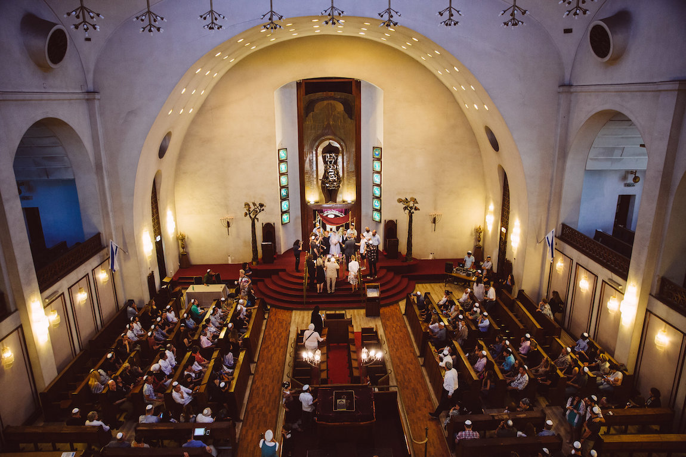

<ion-header>
  <ion-navbar>
    <button ion-button menuToggle>
      <ion-icon name="menu"></ion-icon>
    </button>
    <ion-title>רשימת בתי כנסת</ion-title>
  </ion-navbar>
</ion-header>

<ion-content>
  <ion-card>
  
  <ion-card-content>
    <ion-card-title>
    {{synagogueName}}
     </ion-card-title>
    <p>
      תפילת {{soonMinyanType}} תחל בשעה: {{soonMinyanTime}}
    </p>
    <ion-row>
        <ion-col>
          <button ion-button icon-left clear small>
            <ion-icon name="clock"></ion-icon>
            <div>{{lastUpdatedTime}}</div>
          </button>
        </ion-col>
        <ion-col>
          <button ion-button icon-left clear small>
            <ion-icon name="map"></ion-icon>
            <div>{{distanceString}}</div>
          </button>
        </ion-col>
        <ion-col>
            <button ion-button icon-left clear small>
              <ion-icon name="navigate"></ion-icon>
              <div>נווט</div>
            </button>
          </ion-col>
      </ion-row>
  </ion-card-content>
</ion-card>
</ion-content>
